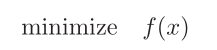
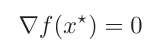
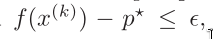

Newton’s method
There are two major shortcomings of the classical conver‐
gence analysis of Newton’s method.
Newton’s method: unconstrained minimization.

where f: Rˆn ‐> R is convex and twice continuously differentiable
(which implies that dom f is open).
A necessary and sufficient condition for a point x* to be optimal
is

Solving the unconstrained minimization problem is the same as
finding a solution of the gradient=0, which is a set of n equa‐
tions in the n variables x1,...,xn. In a few special cases, we
can find a solution to the problem by solving the optimality
equation, but usually the problem must be solved by an iterative
algorithm.
By this we mean an algorithm that computes a sequence of points
x(0), x(1), ... such a sequence of points is called a minimizing
sequence for the problem. The algorithm is terminated when

(some specified nonnegative tolerance)